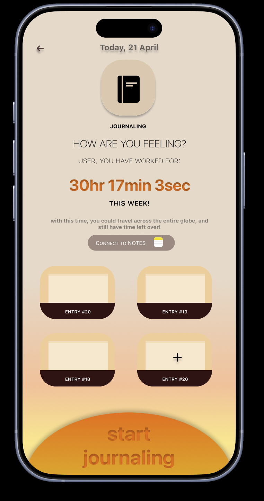
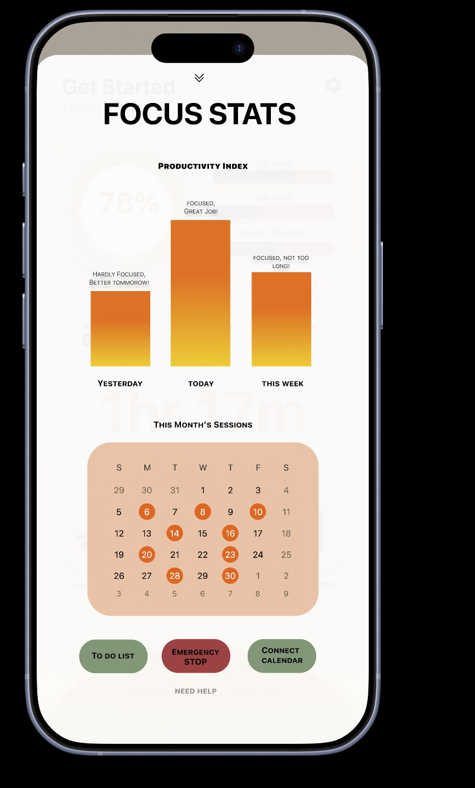
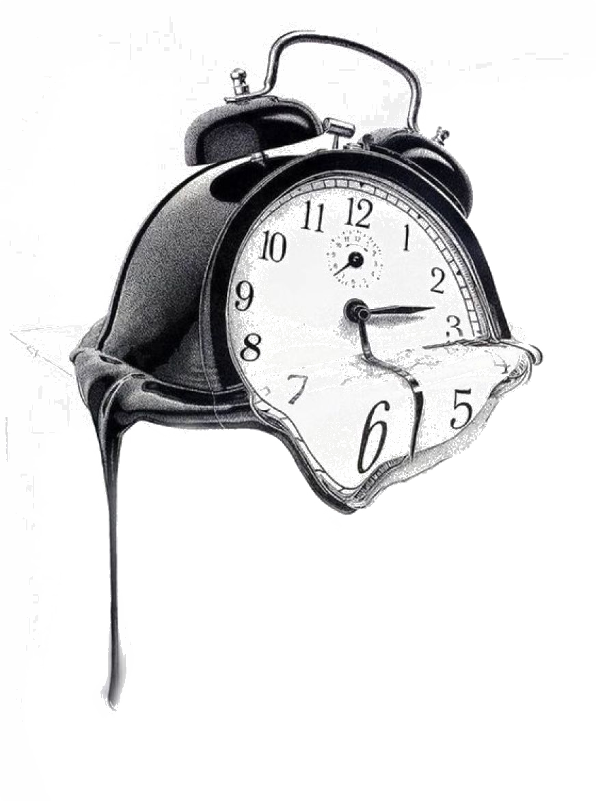
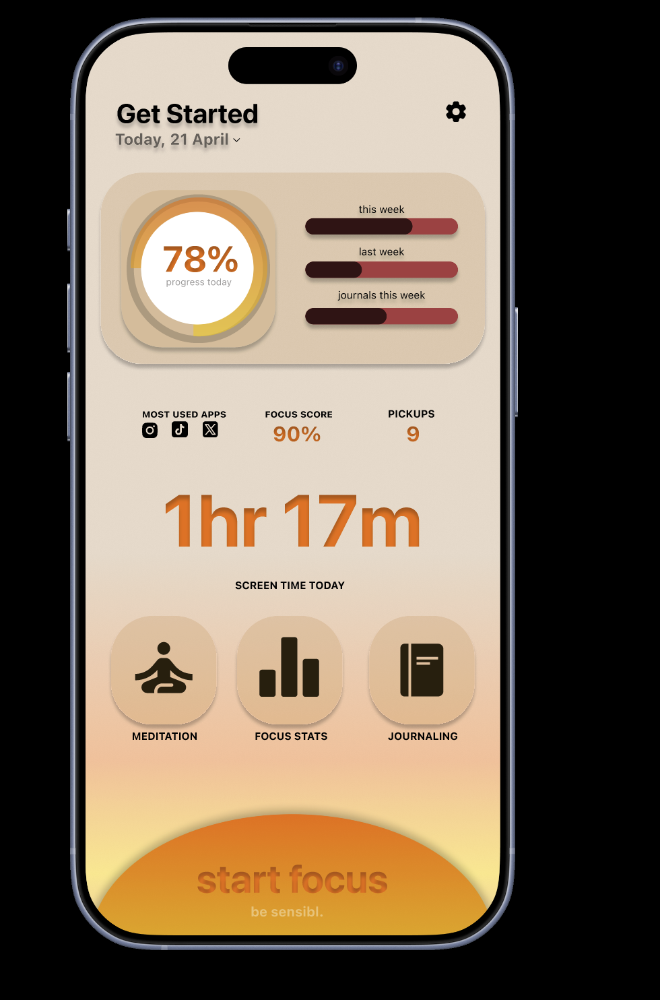
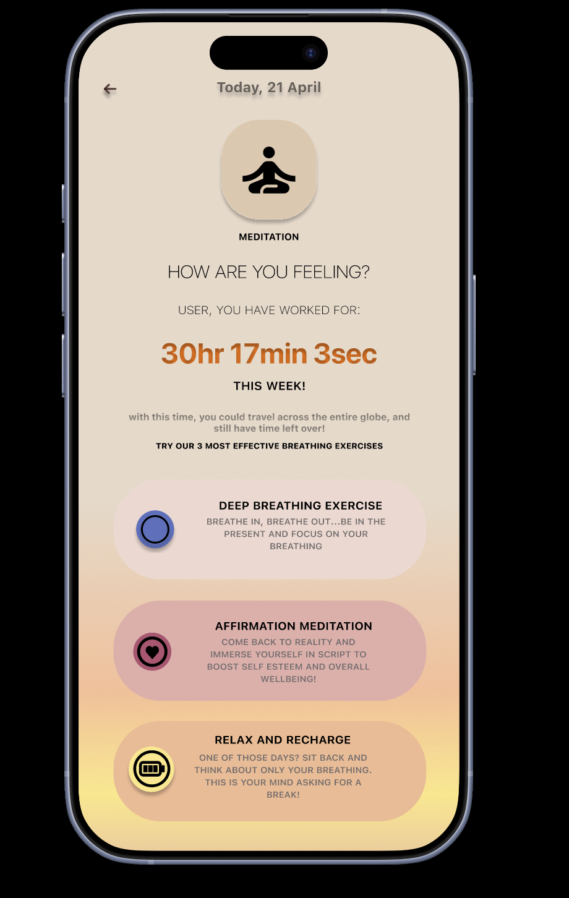
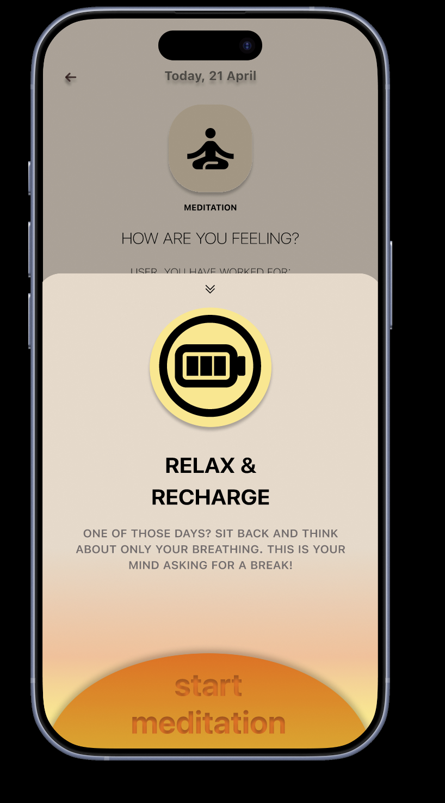
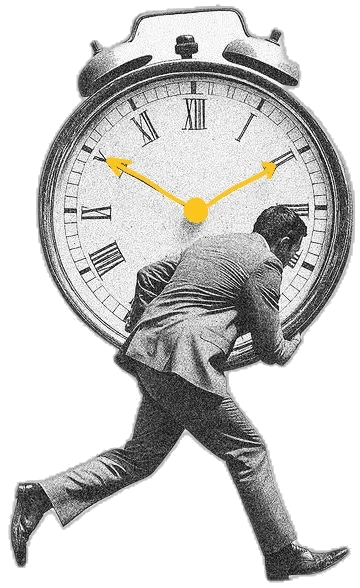

Intentional pause
A short reflection gives users time to reconsider why they are opening an app.
02 / SENSIBL — DIGITAL WELL-BEING
A digital-wellbeing app concept exploring a pause before automatic phone use, with reflection prompts, journaling, focus statistics, and meditation.
Try the prototype ↓UX RESEARCH / INTERACTION DESIGN / UI DESIGN

 Your time deserves your attention.
Your time deserves your attention.Smartphones often shift from purposeful tools into automatic habits. Our concept asks whether a moment of reflection could help people notice that habit before continuing.
A short reflection gives users time to reconsider why they are opening an app.
Variable button placement explores a way to interrupt repetitive tapping; its usability still needs testing.
Reflection and meditation features offer a next step, not just a barrier.
THE EXPERIENCE / UP CLOSE
Actual project screens, with the details that shape each decision. Select a full screen to inspect it.
“Do you really need to use your phone right now?” A direct reflection prompt creates a choice point before the next automatic tap.
Journaling offers a concrete next step after the pause: a space to put thoughts into words and reconnect with the present.

The focus statistics screen brings patterns into view. The design intent is awareness; whether this changes habits still needs testing.

The concept explores how a more considered digital routine could make space for reflection.

SCREEN STUDIES / SELECT TO ENLARGE
Explore the home screen, a meditation session, and the reflection tools together.



The screen studies below show how the experience moves from awareness to a mindful next step.

EARLY DESIGN STRUCTURE
The supplied process slide explores four areas: the opening screen, main dashboard, reflection, and meditation. The early layouts group personal activity and screen-time statistics alongside the actions someone can take next.
The main page groups a personal summary with feature areas and a larger activity panel.
The reflection layout places a weekly activity view beside response areas, bringing awareness and action into the same screen.
The meditation layout introduces selectable content and a playback action.
The final prototype screens above show how these early groupings developed. Whether the pause improves attention or changes phone habits still needs usability testing.
INTERACTIVE PROTOTYPE
This project strengthened the team's comfort with Figma, layout organization, and prototyping. The next phase would test whether the pause changes behavior, whether the variable button placement actually breaks muscle memory, and whether users trust the app enough to return after the first session.
next: CLAC Media{kind=link}
{kind=link}
{kind=link}
{kind=link}
{kind=link}